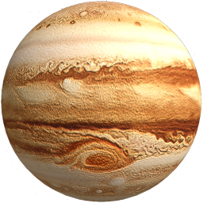
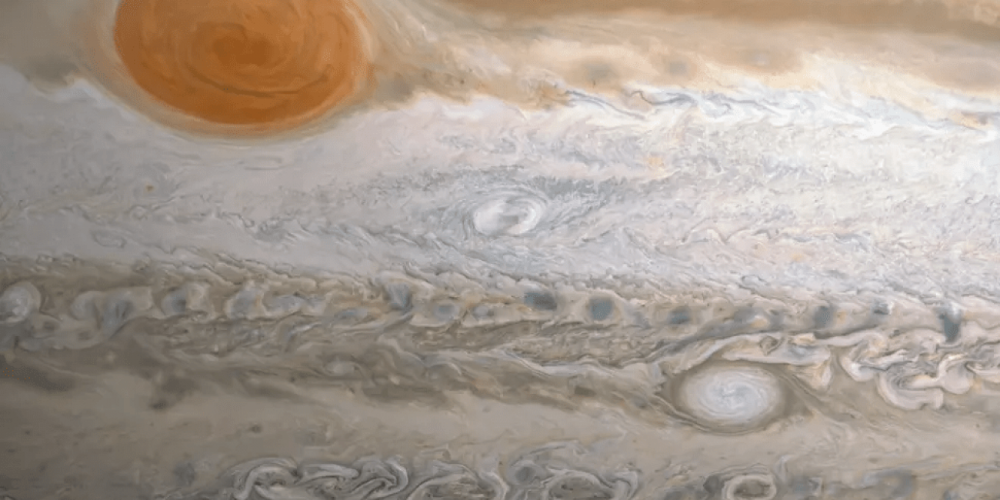

- Jowisz to planeta, która w Układzie Słonecznym wyróżnia się czymś więcej niż tylko masą i wielkością.
Tzw. Wielka Czerwona Plama widoczna na Jowiszu jest w rzeczywistości ogromną burzą. Wielka Czerwona Plama
jest to zjawisko charakterystyczne dla wyżów barycznych, noszące nazwę antycyklonu. W jego przypadku wykonywany
obrót jest przeciwny do ruchu obrotowego naszej planety, a jest on tak potężnych rozmiarów, że bez problemu możemy
go zauważyć przy wykorzystaniu nawet prostego teleskopu.
- Po raz pierwszy udało się wykonać dokładniejsze obrazy Wielkiej Czerwonej Plamy na Jowiszu dzięki misji
sondy Voyager w 1979 roku, kiedy to udało się wykonać zdjęcia z odległości poniżej 300 tysięcy km od górnych warstw
struktur atmosfery.Wielkość tego antycyklonu zmienia się na przestrzeni lat, a według dotychczasowych obserwacji rozmiary
oscylowały zazwyczaj wokół między 24 tysiącami a 40 tysiącami km. Obecne dane wskazują, że może się ona zmniejszyć nawet
do 16 tysięcy km, a na przestrzeni wieku straciła ona 50% swojej wielkości.Pod nim znajduje się kolejny antycyklon
mający o połowę mniejsze rozmiary, jednakże są porównywalne z promieniem naszej planety.
- To, co szczególnie nurtuje naukowców, to przede wszystkim mocne zróżnicowanie barw, w przypadku których kolorystyka oraz
długość ich trwania często pozostają niewyjaśnione – jaśniejsze owale, wraz z białymi, to prawdopodobnie struktury chmur o
niższej temperaturze, natomiast te o pomarańczowej i brązowej kolorystyce mają wyższą temperaturę.
Wiele z tych warstw ma sporą rozbieżność w żywotności, która waha się od kilku godzin do nawet setek lat.
- Ten antycyklon trwa nieprzerwanie od co najmniej 355 lat.

 powrót
powrót